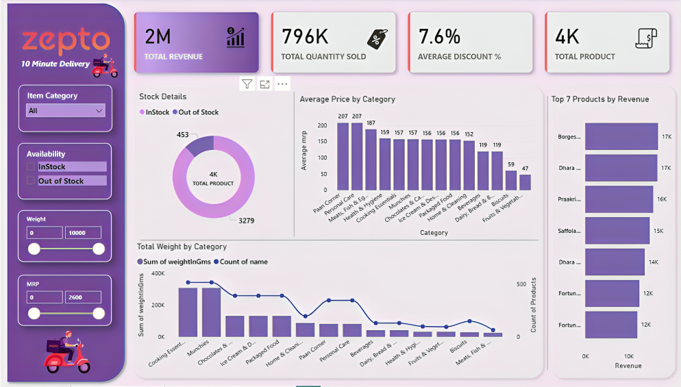
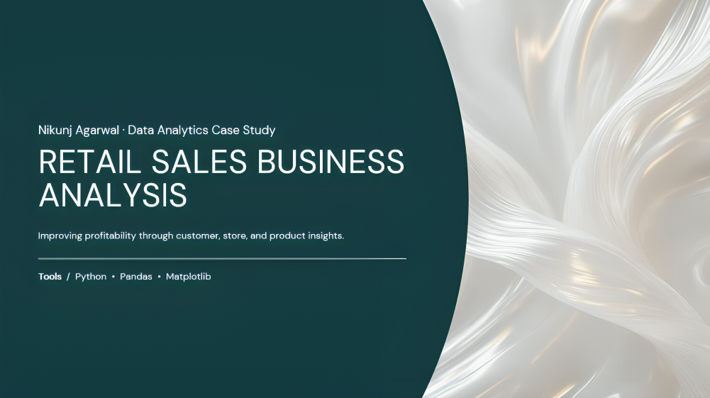

Data Analyst | Python | SQL | Power BI
I'm a motivated Data Science undergraduate seeking to contribute as a Data Analyst where I can apply my skills in data analysis, visualization, and problem-solving to help businesses make better decisions. I enjoy working with data – finding patterns, building dashboards, and turning numbers into stories that people can actually act on.
Data Analyst • Power BI • SQL • Python
I'm a motivated Data Science undergraduate seeking to contribute as a Data Analyst where I can apply my skills in data analysis, visualization, and problem-solving to help businesses make better decisions.
I enjoy working with data – finding patterns, building dashboards, and turning numbers into stories that people can actually act on. Eager to grow in a collaborative environment and take on real-world challenges.


Analysed retail transaction data for Wayne Inc. (NY & LA) to improve profit margins. Identified top 5 multi-store customers for a targeted 10% discount campaign, confirmed TV campaign boosted revenue, and flagged Store LA_333 as a low-risk closure candidate.
Tools: Python, SQL, Power BI, Excel
Tools: Data Analysis, Risk Assessment, Manufacturing Analytics
Tools: Power BI, Strategic Thinking, Dashboard Design
Specialization: Data Science
Swami Keshwanand Institute of Technology, Jaipur
Senior Secondary (Class XII) — CBSE Board
Agra, Uttar Pradesh
Secondary (Class X) — CBSE Board
Agra, Uttar Pradesh
HackerRank
Udemy
LeetCode
I'm actively looking for Data Analyst opportunities. Whether you have a question, a project idea, or just want to say hello — my inbox is always open!
Location: Agra, Uttar Pradesh, India